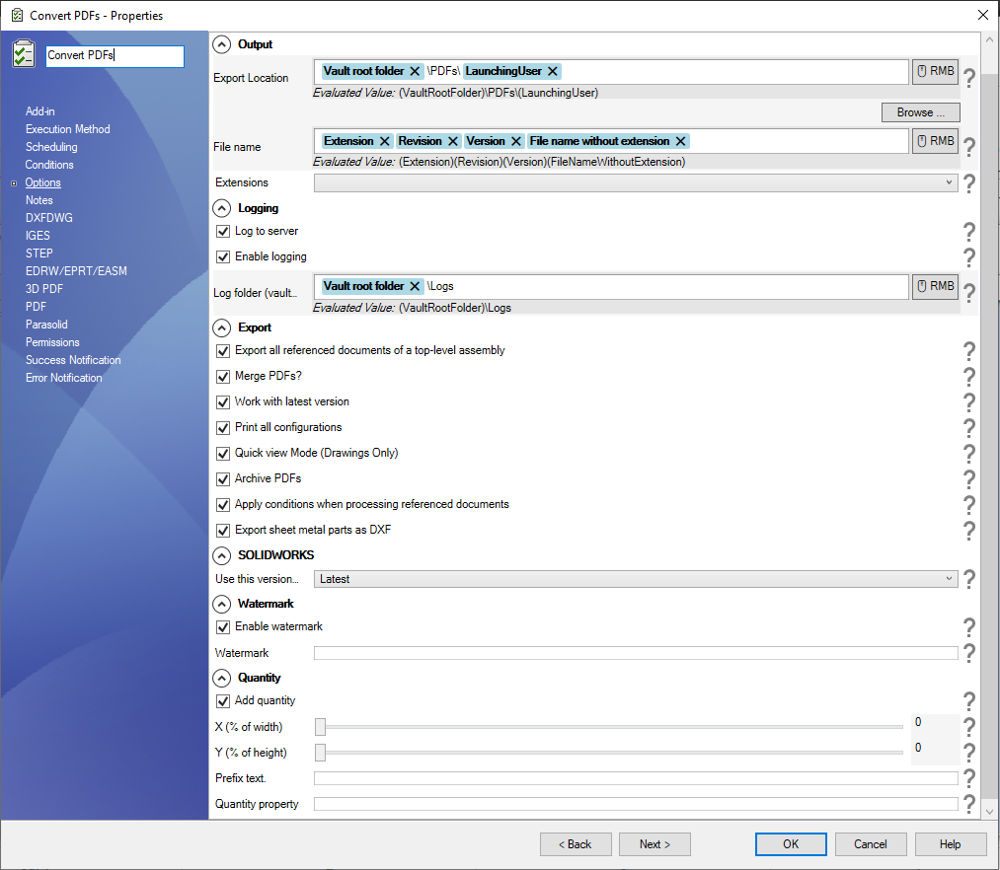
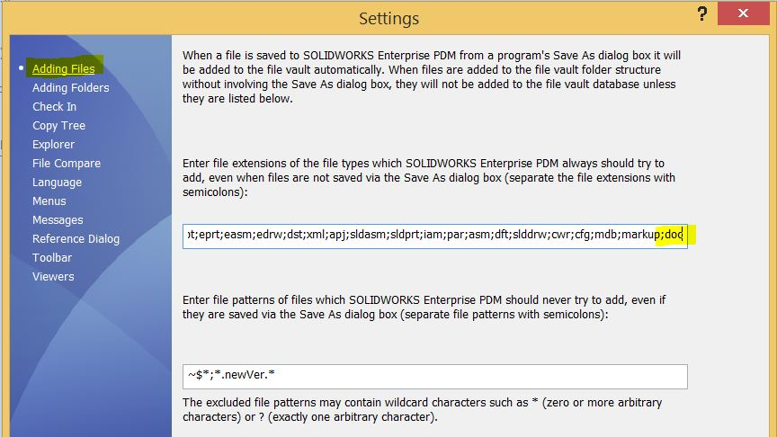

Options Setup Page
When you choose PDM Task Convert Extended from the dropdown in the new task dialog, you will be prompted a window that is similar to the one below:

| Option | Description |
|---|---|
| Output | This is where you specify the location where you want the exported documents to be saved. This location can be inside or outside the vault. |
| Extensions | These are the extensions the task should export. Supported extensions are:
|
| Logging |
|
| Export |
|
| Watermark | Add a watermark to the printed PDF. You can use the special value ($CustomProperty) if the value of the desired watermark is found in a custom property. |
| Quantity | Add the document quantity from the calculated BOM of the top-level assembly. Two options:
|
Important Notes About Creating Tasks
Please consider the following recommendations when creating a new task using PDM Convert Task Extended:
- Execution method
- In the execution method tab that appears on the blue left sidebar, please:
- Choose the radio box option “Let the system decide which computer to execute the task“.
- Choose one computer. We recommend that our customers opt for the server. The server needs to have a SOLIDWORKS PDM Client installed with a local view as well as SOLIDWORKS 3D.
- On the first page of the task, execute the task with a user that has the right workflow and file/folder permissions.
Tip
We also recommend disabling the auto-add extensions by removing all the extensions the task uses including txt.
This prevents race conditions between SOLIDWORKS PDM and the task during files add process.
To change the auto-add extensions list,
- Go to the PDM Administration tool
- Right click on the username (or all users)
- Select settings
- Click on the “Adding Files” selection and edit the file extensions
